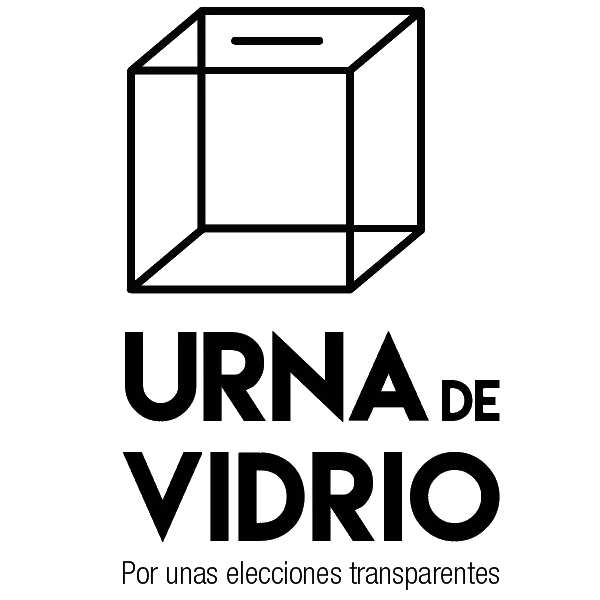

Iniciativa independiente para proteger el resultado electoral después de realizado el escrutinio de cada urna, en la junta receptora del voto. Permite subir la fotografía del acta de escrutinio firmada con los resultados finales de cada una de las juntas electorales, más la información de ubicación de la Junta respectiva.
TRANSPARENCIA TOTAL